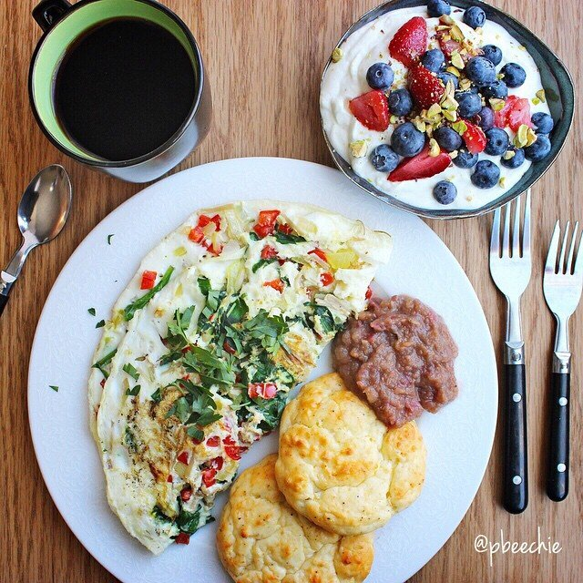

Garlic Cauliflower Biscuits

IDKKK if you've seen but Elli Quark is having this amazing challenge called #EatCleanShowdown that's like an irl Chopped episode :o. I am honored to be 1 of the 5 contestants for Round 1! The mandatory mystery ingredients that were sent to use: enoki mushrooms, fresh tamarind, orange cauliflower, salted pistachios, and lemon greek yogurt!! The theme: Brunch!!
When I think brunch I think a buffet style, luxurious selection of anything and everything, sweet, savory, all the things your heart desires. SOOO dis be mah entry. A southwestern veggie omelette, garlic cauliflower biscuits with an apple tamarind jam, and a lemon yogurt bowl topped with berries & pistachios. A brunch very much enjoyed.
This contest was such a fun challenge; it made me branch out and explore a new food (tamarind!). I had JUST been talking to my coworker the week before about where he grew up and how they always enjoyed fresh tamarind off the trees. I had been asking him how they always ate it; he said just straight, as is! And I was convinced I had to try it and get over my fear & intimidation of the pods. It was much easier than I anticipated! And SO tasty!! New favorite food. Learning is fun.
And these protein cauliflower biscuits are most certainly now a staple in my house from this point forward. Me and Jesse fought over who'd get them, and I already made 2 batches within 2 days haha.
Garlic Cauliflower Biscuits
Makes: 4 Biscuits
-
1/2 cup raw cauliflower "riced"
-
1/4 cup (2 oz) greek yogurt
-
1/4 cup almond flour
-
1 whole egg
-
1 TBSP olive oil
-
1/2 scoop unflavored protein powder
-
1/4 tsp garlic
-
1/8 tsp black pepper
Chop up a raw cauliflower head and place it in a food processor. Pulse until a "rice" texture is obtained. In a bowl, mix 1/2 cup of the cauliflower "rice" with all of the remaining ingredients. Once mixed, form into 4 dough balls and place on a sprayed baking sheet. Bake at 350 F for 15-20 mins until lightly browned on top!
I like to then slice in half and toast them after for a wee little crisp on the inside, or eat them as is! Store in the fridge.